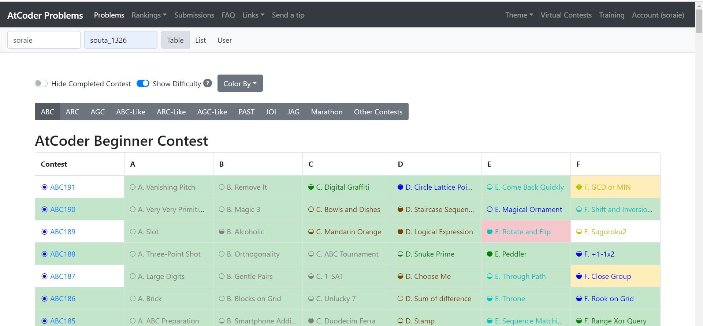

第3章-役に立つリンク集
前回の章ではAPGのリンクを置いておくだけで、皆さんに基礎文法の学習を任せてしまい、申し訳ないです。 C++の基礎文法はある程度理解できたでしょうか？
今回の章からは本格的に問題演習をし、競技プログラミングに慣れていってもらいます。 問題演習に当たって役に立つリンクをいくつか紹介したいと思います。
その前に
この記事を読んでもらう前に皆さんに必ず読んでもらいたい記事をここに置いておきます。
レッドコーダーが教える、競プロ・AtCoder上達のガイドライン【初級編：競プロを始めよう】
先ほど競技プログラミングという単語が出てきて何か分からなかった人もいるかもしれませんが、この記事を読めばなんとなくどういうものか分かると思います。 また、記事中にいくつか演習問題が出てきますが、演習問題をまとめたものを作ったので問題を解くところは無視してもらってもいいです。
記事は読みましたか？それでは本編スタートです！
APG4bがあったサイトです。上の記事でも紹介されていたと思いますが、 ここではプログラミングのコンテストに参加したり、過去問を解いたりすることができます。
上の記事にも出てきましたが、ここでもう一度紹介します。

上の画像のような感じでAtCoderで自分の解いた問題、自分のライバルの解いた問題を可視化してくれます。
左上の二つのユーザー名のうち、左が自分、右が自分のライバルのユーザー名です。 自分が正解した問題を緑、ライバルが正解した問題をピンク、自分が間違えた問題をオレンジに表示します。
この場合は「soraieが正解した問題」は緑、「soraieが正解していなくてsouta_1326が正解した問題」はピンク、 「soraieが間違えた問題」はオレンジに表示してくれます。
また、解いた問題の可視化だけでなく他にも様々な機能があります。 例えば、
- Virtual Contests 本番のような形式の疑似コンテストを開ける
- User 好きなユーザーの詳細な情報を見れる
こちらも自分の解いた問題を可視化してくれるサイトですが、AtCoder Problemsがコンテストごとに表示をしているのに対して AtCoder Scroesは問題の得点ごとに解いた問題を可視化してくれるのです。
実際にどんな感じで使うのかを説明します。

まずトップの挑戦者のところにところに自分のユーザー名を、対戦相手のところにライバルのユーザー名を入れてEnterを押します。

すると下のほうに上の画像のような感じで表示されると思います。 ここではそれぞれのユーザーが正解した問題、間違えた問題が色分けされて表示されます。
また、そのユーザーがどれだけ精進をした(問題を解くこと)かをグラフにしてくれる 精進グラフという機能もついています。
まとめ
この章では競技プログラミングで主に使うサイトとその紹介をしました。これらのサイトは今後頻繁に使うので今のうちに 実際に使ってみてください。 ほかにも便利なサイトがたくさんあるので付録に載せておきました。是非見てみてください。
また、AtCoder Scoresの説明中に「精進」という言葉が出てきました。 精進とは競技プログラミングの問題を解くことを指します。精進をしなければ実力は上がりません。実力向上への近道は精進です。 なのでたくさん精進をしましょう。